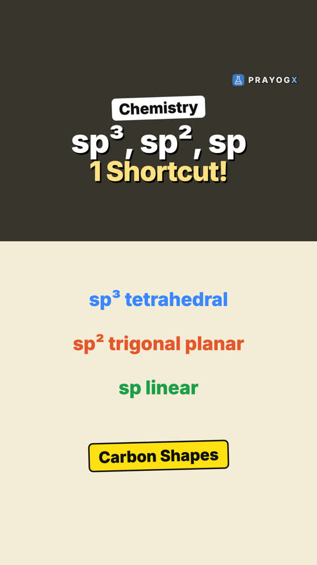
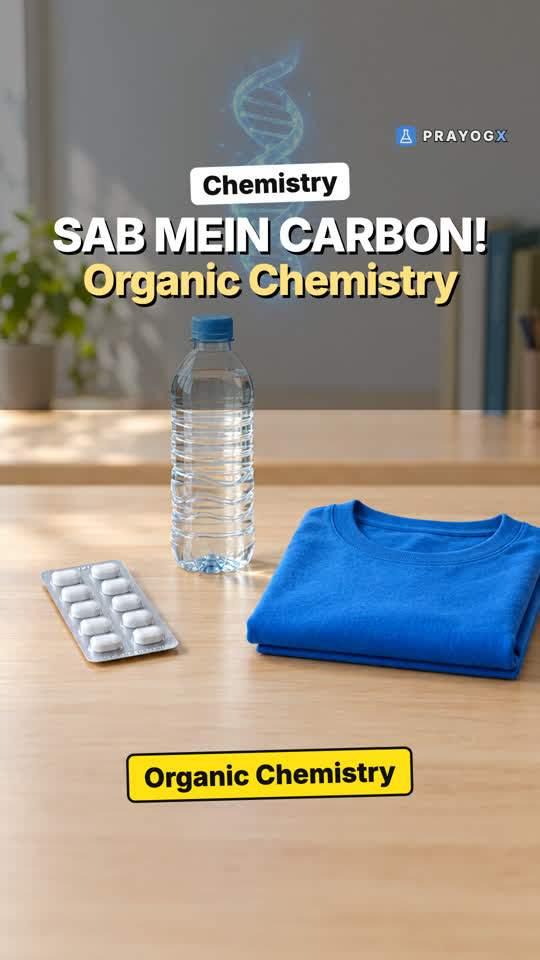

Chapter 8 · Chemistry
Why Carbon Forms Millions of Compounds
Video not playing? YouTube
Over 100 elements, yet most known compounds contain carbon. Four reasons, and why silicon can't do the same.
Download the short notesPDF, 175 KB · solved examples, practice set and answer key Download the workbook
PDF, 181 KB · fill in the blanks, true/false, assertion-reason, MCQ, numericals, short answer, match the columns; detailed solutions at the end Up next in this chapter

Shapes of Carbon Compounds: sp³, sp², spMethane, ethene and ethyne all contain carbon but have different shapes. Hybridisation, and a quick way to find it.Chemistry · simulationKey points
- 4 bonds: one carbon atom can grow in 4 directions.
- Strong C–C bonds (about 350 kJ/mol) make long chains stable; Si–Si bonds (about 225 kJ/mol) are weaker.
- Bond variety: single, double and triple bonds, and easy bonds to O, N and halogens.
- Isomers: C₄H₁₀ has 2, C₅H₁₂ has 3, C₁₀H₂₂ has 75, and C₂₀H₄₂ has 366,319.
Isomers of alkanes
| Formula | Structural isomers |
|---|---|
| C₄H₁₀ | 2 |
| C₅H₁₂ | 3 |
| C₁₀H₂₂ | 75 |
| C₂₀H₄₂ | 366,319 |
Quick quiz
3 questions. Choose an answer for each, then submit to see your score and the explanations.
More from Organic Chemistry – Some Basic Principles and Techniques

Organic Chemistry: Chapter IntroductionParacetamol, plastic, cotton and DNA share one element: carbon. Why carbon forms millions of compounds, and what this chapter teaches.Chemistry Wöhler's Urea and the End of Vital ForceChemists once believed only living things could make organic compounds. In 1828 Friedrich Wöhler heated an inorganic salt and made urea.Chemistry
Wöhler's Urea and the End of Vital ForceChemists once believed only living things could make organic compounds. In 1828 Friedrich Wöhler heated an inorganic salt and made urea.Chemistry Drawing Organic Molecules: Four WaysOne butane molecule, four ways to write it: complete, condensed, bond-line and 3D. How to read each, and how to count what a zigzag hides.Chemistry · simulation
Drawing Organic Molecules: Four WaysOne butane molecule, four ways to write it: complete, condensed, bond-line and 3D. How to read each, and how to count what a zigzag hides.Chemistry · simulation Classifying Organic CompoundsMillions of organic compounds, one first question: is the carbon chain open, or a ring? How to sort compounds into acyclic, alicyclic, aromatic and heterocyclic.Chemistry · simulation
Classifying Organic CompoundsMillions of organic compounds, one first question: is the carbon chain open, or a ring? How to sort compounds into acyclic, alicyclic, aromatic and heterocyclic.Chemistry · simulation Functional GroupsTwo molecules can share the same carbon chain and still behave differently. How one small group of atoms gives a compound its chemical identity: –OH, –CHO, C=O, –COOH and –NH₂.Chemistry · simulation
Functional GroupsTwo molecules can share the same carbon chain and still behave differently. How one small group of atoms gives a compound its chemical identity: –OH, –CHO, C=O, –COOH and –NH₂.Chemistry · simulation